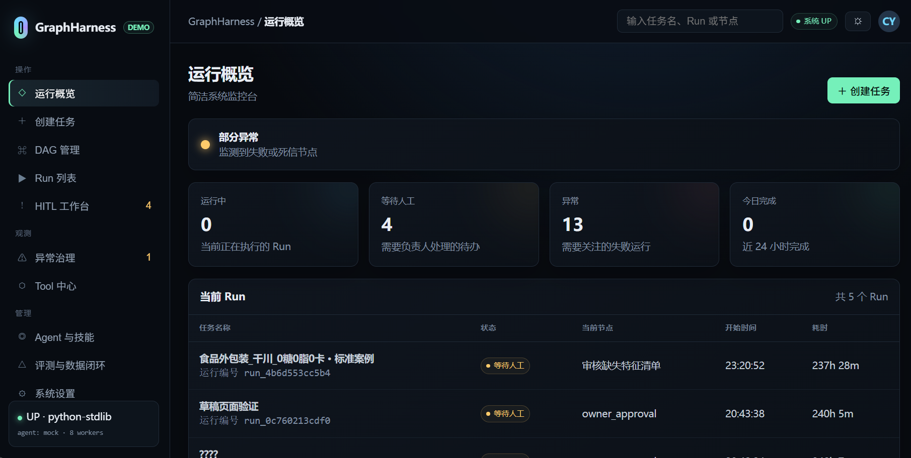
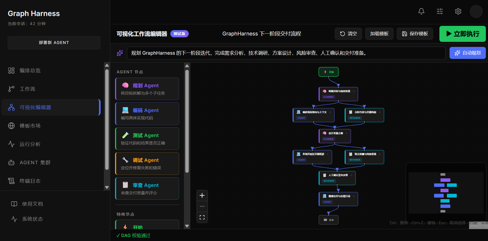
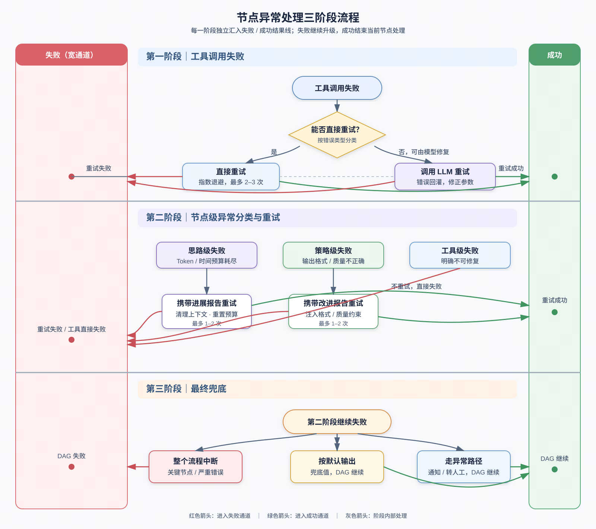
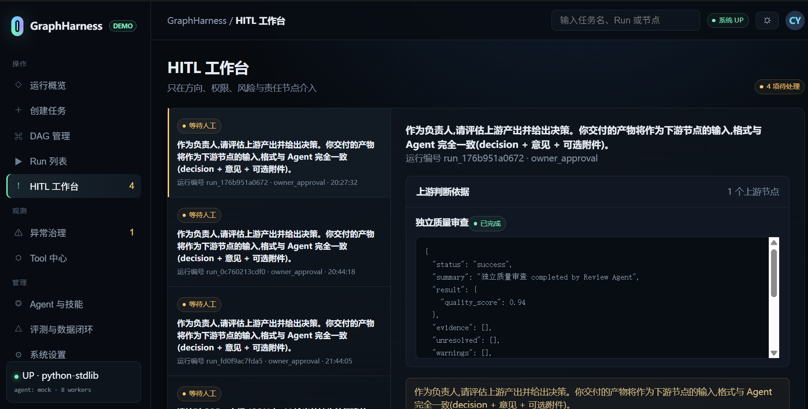

GraphHarness
面向流程相对固定、需要多 Agent 与人工协同的长链路任务，把确定性编排从人和模型手中收回，交给系统持续推进。

运行概览：统一查看并行 Run、等待人工节点与异常状态。点击查看原图。
先说明为什么需要这套系统
这一部分只回答三个问题：真实工作中哪里浪费了时间、GraphHarness 服务什么任务、系统与人分别承担什么职责。
真正的瓶颈不是 Agent 不会做，而是人一直在替系统推进流程
每一步可能都能借助 Agent 完成，但仍需要人等待结果、整理上下文、检查是否达标，再通知下一个角色。人的时间被低价值调度切碎。
Agent 做完等人审查，人布置任务后等 Agent 返回，多个流程也无法统一管理。
全量历史持续累积，工具结果和推理噪声挤占上下文，导致目标偏移与步骤遗漏。
把规划、调度和恢复都交给模型，会出现跳步、重复执行和异常后状态不一致。
一条策略需要经过资料查询、策略搭建、结果审查和跨系统流转，中间还包含权限与安全审批。没有 Harness 时，人需要手动选择 Skill、复制上下文并持续关注状态；接入后，系统自动推进普通节点，只在审批、信息不足或异常时通知人介入。价值不是少点几次按钮，而是让一个人可以同时管理多条 Run。
项目最核心的三个设计
Planner 生成一张可执行的图，Orchestrator 确定性推进图，Agent Runtime 只在单个节点内处理不确定任务。这三部分共同构成项目主链路。
把概率推理限制在节点内，把确定性控制留给系统
Graph 定义协作关系，Harness 提供让这张图稳定运行的工程环境。规划策略、执行引擎与模型 Runtime 可以独立替换和测试。
为什么不使用 Master Agent 集中调度
如果让一个 Master Agent 同时负责规划、选择工具、判断依赖、保存状态和处理异常，执行语义会与模型和 Prompt 强耦合，同一任务也难以稳定复现。GraphHarness 将 Planner 的输出冻结为版本化 DAG，后续由 Orchestrator 按规则执行；更换模型或节点 Agent 时，不需要重写调度逻辑。
一次任务如何从自然语言变成可恢复的 Run
用户确认的是流程，系统执行的是带版本、契约与状态的 DAG。只有满足依赖和质量门禁的节点才会释放后继任务。

DAG 编辑器：自动规划后先校验和确认，再进入执行阶段。点击查看原图。
调度实现：由依赖关系推导并行，而不是让模型猜哪些任务可以并行
Orchestrator 使用 Kahn 拓扑排序维护每个节点的剩余依赖数。入度为 0 的节点进入 ready queue 并发执行；节点进入终态后发送事件，原子更新后继节点入度，减到 0 时释放后继任务。执行结束后仍有非零入度节点，即可判定图中存在环。
两阶段 Plan：先确定做什么，再确定怎么执行
一次同时生成拓扑、工具、Schema 和数据映射会分散模型注意力。拆成两个阶段后，每次生成面对更明确的约束。
构建正确的任务骨架
只处理节点职责、依赖关系和并行结构，优先保证任务覆盖、粒度合理与拓扑合法。
- 确定性校验：环、非法引用、不可达节点
- 语义评审：任务覆盖、拆解粒度、流程逻辑
- 人工校准：确认后冻结拓扑与 Plan 版本
把流程变成可执行契约
在已确认 DAG 上补充执行细节，避免为了匹配某个 Tool 反向扭曲任务拆解。
- 执行主体：Agent、Tool 与权限
- 数据契约：输入来源、输出 Schema、字段映射
- 运行策略：验收条件、预算、HITL 与恢复策略
为什么 Plan 能力会退化
早期 Planner 只需要生成节点和边。后来又要同时选择 Agent 与 Tool、定义输入输出 Schema、建立字段映射、配置人工节点并输出复杂 JSON。流程语义和执行配置属于两个不同问题，一次完成会让模型为了适配工具而改变任务拆分，或在补配置时遗漏前置依赖。
让长流程跑得完、跑得稳，也能解释发生了什么
下面四部分不是独立卖点，而是围绕主链路提供上下文隔离、质量控制、人工协作和可观测能力。
节点隔离不是简单压缩，而是建立稳定的数据边界
每个节点只获得完成当前任务所需的最小完整信息。大文件和完整工具结果作为 Artifact 保存，通过引用按需读取。
commit_sha；并行节点通过 branch + worktree 隔离修改，冲突交给 Merge Agent，无法可靠处理时进入人工介入。质量门禁与异常恢复是两条不同的控制链
质量门禁判断结果能否过线，异常治理决定失败后由谁、在哪一层、以什么成本恢复。执行 Agent 不负责验收自己的产出。

节点异常处理三阶段流程：工具调用失败、节点级异常分类与重试、流程级最终兜底。点击查看原图。
超时、429、临时 5xx 指数退避；参数错误交给模型修正；不可恢复错误直接上抛。
创建新 NodeAttempt，只继承验证过的事实和工具结果，清理错误推理轨迹后重组上下文。
根据策略选择中断、显式默认值、异常分支或人工接管，再从 Checkpoint 恢复。
Checkpoint 恢复遵循依赖关系，而不是简单回退一页
Checkpoint 保存 Run 与节点状态、结构化输出、预算使用情况和 Workspace 的 commit_sha。节点被修改或重试时，所有依赖它的后继节点都会失效并重新初始化；已经成功且不受影响的节点不会重跑。恢复只认 Checkpoint 中的状态，不依赖 Trace 反推运行现场。
人不是流程调度器，而是可被系统调用的关键决策者
人工介入分为预先编排的 HITG 与运行时临时触发的 HITL。系统负责准备判断所需上下文，并把人的结果写回 Workflow。
HITG · 图中的正式节点
适用于已知的人工作业：审批、审核、权限受限操作。人像 Sub Agent 一样接收明确任务、上游依据和输出契约。
HITL · 运行时中断
适用于临时不确定性：信息不足、低置信度或高风险 ToolCall。保存状态，收到人工结果后恢复。

HITL 工作台：集中展示上游判断依据，减少人工重新梳理上下文的成本。点击查看原图。
Trace 记录执行事实，不替治理模块做判断
六级 Span 能定位到某个节点的某轮推理，并区分一次逻辑调用和底层多次物理重试。Event 补充瞬时事实。
还原“谁调用了谁”的执行树与时间线。
串联同一问题引发的重试、冒泡、降级与 HITL。
两条排查路径
第一条按 Run → Node → NodeAttempt → Round → ToolCall → ToolAttempt 逐层下钻，回答“问题发生在哪里”；第二条按 correlation_id 聚合同一次故障相关的重试、异常冒泡、降级和人工处理，回答“系统后来怎样处置”。Trace 只负责记录和查询，异常分类、根因判断和动态评分由独立模块消费数据后完成。
最后回答系统效果如何，以及哪些事情还没有完成
数据必须附带测试口径，设计方案与已有实现必须分开，项目边界也应主动说明。
把结果、测试口径与未完成项放在同一个视图里
指标用于解释工程取舍，不替代完整实验报告。没有完整口径的数据在页面中明确注明。
| 待完善能力 | 当前状态 | 后续方向 |
|---|---|---|
| ToolHub 工具智能化管理 | 计划中 | 利用 Trace 中的工具调用记录，为 Plan Agent 提供更充分的 Tool 选择依据。 |
| Trace 可视化 | 记录已实现 | 继续设计可视化方式，让用户能够更直观地下钻异常位置并复盘处理链路。 |
| 多 LLM 模型调用 | 尚未实现 | 为 Review Agent、Plan Agent 等不同职责选择更合适的模型。 |
| 上下文传递智能化 | 尚未实现 | 当前主要减少工具调用等无关信息，后续根据任务类型动态决定传递信息量，例如简单查询与复杂任务使用不同预算。 |
四次迭代，不变的是 DAG，变化的是问题定义
项目最终从“做一个工作流工具”转向“为真实协作任务提供可控运行环境”。
这是我从后端转向 Agent 后做的第一个项目。最初形态类似扣子，通过拖拽节点定义工作流，重点是把基础 DAG 跑起来。
日常使用 Agent 时，我经常遇到执行路径不可控、跳步和遗漏，于是开始用 DAG 固定必须经过的关键步骤。
对比 Claude Code 的 Dynamic Workflow 后，我意识到差异不只在用代码生成 Plan，更在于如何处理长任务中的上下文膨胀、偏移与跳步，因此重新设计上下文组织方式。
实习中的固定协作流程验证了真实需求。结合 Graph Engineering，项目形成“系统管流程、Agent 管执行、人管关键决策”的核心原则。
不变的是 DAG，变化的是它要解决的问题
从 1.0 到 3.0，DAG 先后承担了可视化编排、限制执行路径和治理长链路任务的职责，这些方向让项目逐渐具备技术意义，但仍缺少经过真实使用验证的业务场景。实习之后，我发现广告机审策略搭建这类任务天然具有固定流程、多 Agent 协作、跨平台流转和必要人工节点，原有设计第一次与真实需求对应起来。
因此，4.0 不只是继续增加功能，而是重新确定项目边界：GraphHarness 不试图约束所有开放式 Agent 任务，而是服务于流程骨架相对稳定、需要可验证、可追踪和可干预执行的协作任务。这类需求既存在于技术部门，也存在于审核、运营、审批等非技术流程中。
Graph 定义协作方式，Harness 保证协作稳定运行。
查看前身：Workflow 2.0 →